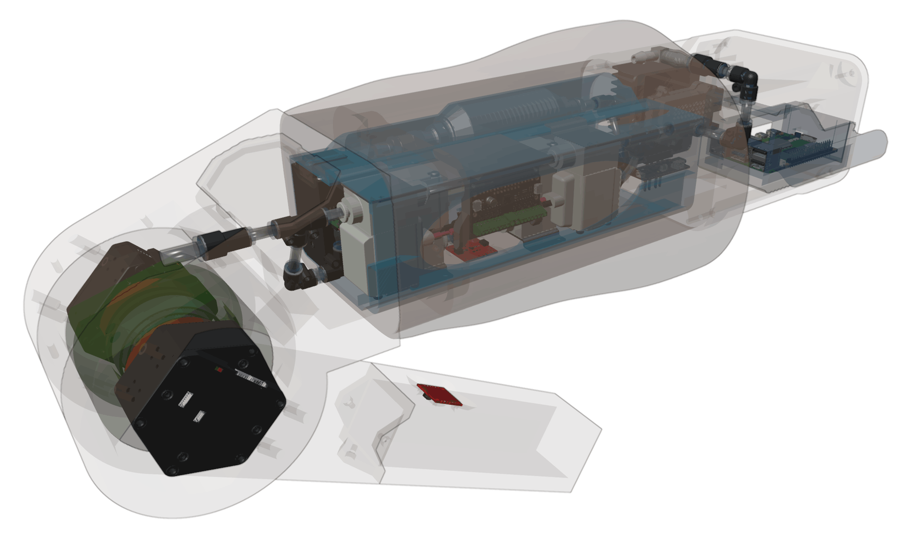

Project Overview
This robotic phantom knee platform was developed as part of my master’s thesis in biomedical engineering. The project investigates how a physical robotic knee mechanism can be integrated with a real-time digital twin for testing and validating robotic and rehabilitation concepts.
The physical platform uses two antagonistic actuators, embedded sensors and a Raspberry Pi running ROS 2. A corresponding model in Unity receives live position and sensor data and represents the movement of the physical mechanism in real time.
Project Overview Image

Project Demonstration Video
Demonstration of the Robotic Phantom Knee platform, including system operation, hardware integration, control, testing and digital-twin functionality.
Master’s Thesis
This engineering platform formed the practical and research basis of my master’s thesis. The work combined system development, embedded sensing, robotic control, communication architecture and digital-twin implementation.
Project Information
My Contribution
My work included system architecture, hardware integration, actuator communication, sensor acquisition, ROS 2 node development and communication between the physical system and Unity.
I also worked on synchronizing position and velocity data, structuring the ROS communication pipeline and preparing the platform for testing robotic and rehabilitation concepts.
System Architecture
Simplified communication structure
Technologies
- Biomedical Robotics
- ROS 2 Jazzy
- Raspberry Pi 5
- Ubuntu
- Unity
- Python
- C++
- Embedded Systems
- IMU Sensors
- Serial Communication
- Digital Twins
Project Objectives
The platform is intended to support early-stage development and validation of robotic and rehabilitation technologies. It provides an environment where physical behaviour, control methods and digital representations can be studied together.